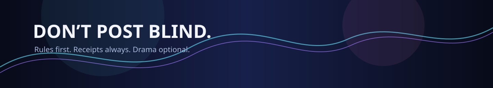

Choose a lane
Pick subscription or donation. The payment panel will appear after you confirm you are 18 or older.
No Ko-fi widget is used. No payment is submitted without your interaction with the provider.
Subscription and donation are separated below. Payment controls stay locked until the age gate is confirmed.
Pick subscription or donation. The payment panel will appear after you confirm you are 18 or older.
No Ko-fi widget is used. No payment is submitted without your interaction with the provider.

Thanks for helping keep the scanner weird, useful, and documentation-heavy.
Fedpromptly recurring support via PayPal or Stripe.
Choose the provider you trust. Each option opens a real provider destination, while the surrounding site remains static HTML.
External providers control their own checkout, terms, and receipts.
Payment and donation controls are age-gated. Confirm you are 18 or older before the provider controls appear.
This gate is a front-end confirmation, not legal or financial advice.